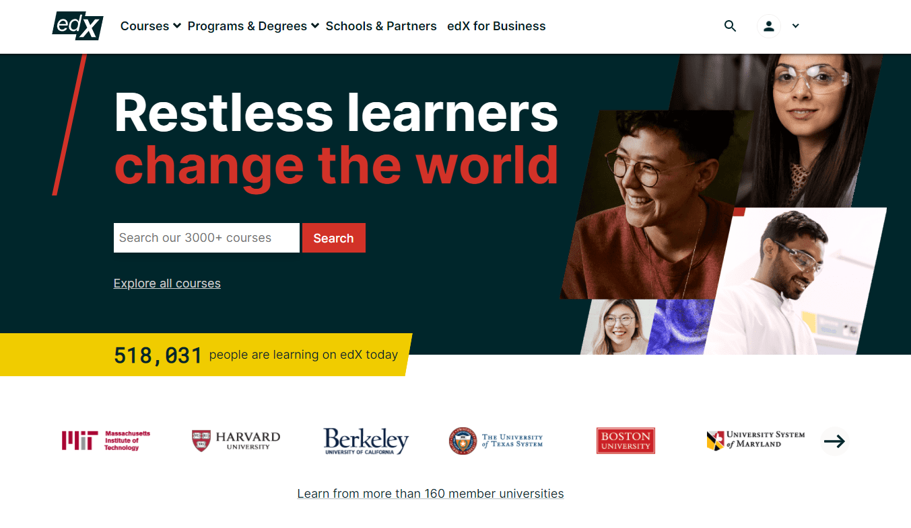
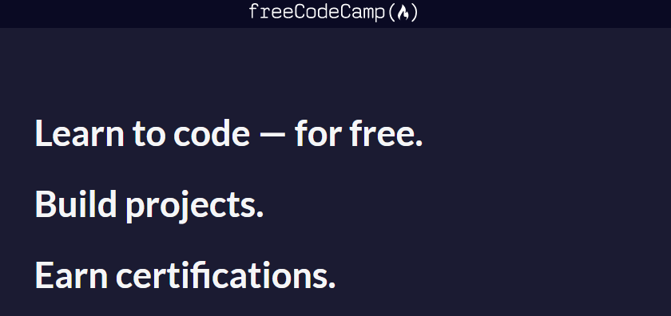

When I first wanted to learn how to code I was completely lost. I was a finance major in the university and did not have any experience in the field of programming. However, I was interested in acquiring the knowledge that would enable me to build one of those useful and cool applications that everybody would use and talk about. Little did I know that the field of programming is very broad and the topics and concepts that you can learn about are endless. So, quite naturally, I didn't know where to begin from. Fortunately for me, I happen to have family and friends who are familiar with this subject or working as developers and took the time to guide me into this new journey that was lying ahead of me. However, this may not be the case for you, and you are still looking for the best place to start learning about programming. That's where I come into play and try to be helpful. In this post, I will provide you with some very useful (hopefully) resources that got me started with learning how to code, and I believe can be very helpful for other people that find themselves in the starting line of the programming journey. These resources could also service people that have already some coding experience and are looking for new places to continue learning.
I cannot guarantee that the suggestions I am about to make are the best ones, but if they're not, they are very close and hopefully they will prove useful in this new mission that you have in your life - learning how to code (yeah I know - dramatic).
Quick advice: Before moving on, I would like to jump in and say that if you are a complete beginner, and you are just starting out with programming, I would suggest you start with the very basics of programming and computer science. By doing so you may be asked to learn about concepts that are not directly related to computer programming but learning about them could definitely contribute to later getting the best out of solely programming courses. Moreover, this path may prove a little harder than jumping right to learning programming languages such as Python, where a lot of abstractions are used. This way, though, you will have a greater understanding of how you interact with a machine when you are running your programs and be able to understand various aspects of a program's lifecycle and ways to make it perform better - making your code more efficient because of that. So, again, my advice is: invest your time and effort now - enjoy faster progress later. This is what I did and I am pretty happy with the results and able to understand lower level concepts better.
With all that said, here are the platforms that made my programming journey possible:
1. edX
This website is a student's paradise. There is an endless amount of courses that you can attend on almost every subject, and, for you and me, every aspect of programming you can think of: front-end development, back-end development, databases, scripting, cloud computing, AI (artificial intelligence), ML (machine learning), and a lot more. These courses can be attended either for a fee or for free. Most of the courses I have come across offer both paid and free versions. The only difference between these two versions usually is that the paid version makes you eligible for a course-completion certificate, once you have gone through all the lectures and completed all the required course projects. Big corporations, like Microsoft, Amazon and Google, and top-level universities, such as Harvard, Cambridge and MIT, have published programs on edx.org that you can follow. Usually, the courses have a structure that you are encouraged to follow. In some cases, you have to complete lectures and projects within certain deadlines, and in other cases, you can follow the programs completely at your own pace.
edx.org is the platform on which I had the first steps of my programming journey, and for that reason, it has a special place in my heart. If you don't already have an edx account I'd suggest you create one. You're not going to regret it.
The first course I took on this platform, and one of the most impactful courses I have completed so far, was the Introduction to Computer Science (CS50 for short), taught by the one and only Havard professor David Malan. If you don't know him, he is a computer science teaching guru and you are going to love him as soon as you have watched one of his lectures. Anyway, the main goal of this course is to provide you with the fundamental knowledge that you need to later explore the programming path you are most interested in. If you take this course you will learn about different data structures, algorithms, cryptography, web development, memory management and more! Moreover, you are going to get an introduction to many widely used programming languages and most prominently C, Python, JavaScript,and then HTML and CSS. These last two are not programming languages really. If someone told you they are, trust me, they are not (👀 here). During this course you will have to complete a series of projects to make yourself familiar with all the different concepts that you are taught in each lecture. This way you can get your hands "dirty" and gain practical experience at solving complex problems.
I am a huge fan of this program and I loved going through it. I followed an old version of it, but there is a newer version (which you can find here) too. If you plan on taking or even just trying out this course, I would suggest following the newest version (obviously).
2. freeCodeCamp
This platform is a must if you want to explore or advance your skills in web development. Everything, from front-end to back-end, APIs, and web development frameworks are taught here. The curriculum is structured in (currently) 11 programs, or certificates, each one covering a different programming topic, and has expanded to topics other than web development too.
Each program consists of one or more smaller sections. These smaller sections meddle with specific concepts of the program's topic. For example, if you start pursuing the "Responsive Web Design Certification" you will learn about HTML, CSS, Accessibility, Responsiveness, and more. This way you can learn about all the most important aspects of a topic, or choose the ones that are of most interest to you. It may happen that you are familiar with some of the topics discussed in a certificate, so you get the option to skip through those sections. In my opinion, following all the sections of a program in the order they are laid out, would guarantee that you get the most out of each program. This would be true, especially if you are a complete beginner, or have only a little experience on the topics of a program.
When I joined freeCodeCamp the site was offering only a few non-web development courses, but today you can learn about Python for data science, and also about information security and machine learning as well. The first program I went through was the "Responsive Web Design" certificate, during which I learned a ton about web development, mostly on the front-end, different concepts and best practices. I went from being a complete novel on web development to beginner and then finally having a great understanding of many front-end technologies. Later, I followed the JavaScript program, called "JavaScript Algorithms and Data Structures", during which I learned a great deal about algorithms and data structures (what a surprise), something that proved very important for me to later get my first programming job. Most of the times, algorithms and data structures are what you get asked about during tech job interviews, and this certificate/program was a great introduction into those concepts.
Recently, after being employed as a developer for some time now, I came back to freeCodeCamp to explore all the new topics that have been added since my the last time I visited the website. I was excited to see many new programs added and I intend to go through some of the them real soon.
As a proper teaching program should do, at the end of each freeCodeCamp program there is a number of usually challenging projects that help you solidify the knowledge that you've received throughout the duration of the course and put this knowledge into practice. The students should complete these projects, in order for a program to be considered completed, and for the student to be able to receive a certification of completion of the program. These projects usually try to make use of all the tools and concepts taught in the program, and you can find them at the very bottom of a program's curriculum page.
This has two benefits:
- You get practical experience so that you are more comfortable developing similar, if not more advanced projects, in the future. For this point, I would also add that you can use these projects in your project portfolio - an essential "weapon" to have when looking for a job as a developer.
- The certification of program completion acts as a confirmation of your competences and skills in a specific field, and you can use it to assure potential employers of your ability to complete a role's duties. There is, even, an option to add the certificate straight to your "Certifications" sections of your LinkedIn profile. I only recently did this, but I realised I should have done it a lot earlier, as it definitely increased the traffic on my profile.
Sometimes you will come across smaller challenges, in between different topic sections, that will solidify concepts and information you have gone through so far. And, more often than not, following along the lecturer and their actions, will let you get more out of each lecture.
Considering all these things, it is clear that this is a huge amount of information and practice that you can receive from this platform.
What's awesome here is that everything is offered to you for free! You can access all of the platform's material when you have created an account on it. How cool is that! At this point I have to mention that, if you do take advantage of this awesome platform, please consider contributing to its maintenance and development by donating a small amount to it.
3. Coursera
Lastly, another high-quality and course-packed platform is Coursera. Coursera has a huge library of courses on various topics, and one of them is programming and computer science in general. Similar to edx, Coursera offers programs from web development to machine learning and almost any topic of programming you can think of.
You can expect very good quality of content and preparation here, and the support offered to you is exceptional too. Programs in this platform can be either free or paid. I am not a very heavy Coursera user, but, so far, I haven't come across programs that offer both paid and free options. Sometimes, if you are lucky, Coursera offers scholarships, part or full, for their paid programs, that you could apply for and attend a whole program for less or no cost at all. This is how I started using Coursera myself. After I had completed the CS50 course, I was full of enthusiasm about my newfound ability to build things from scratch and having a machine perform them for me. As I wanted to explore the different areas that programming extends to, I started looking online for different opportunities to do so. Very soon I came across an Android course that was taught by Google in cooperation with Coursera's team. As there was a full scholarship being offered to a number of candidates for this program, I immediately applied for it. A few weeks later I got a reply saying that I was offered the scholarship and that I had access to the program's material. To be honest, I don't remember the name of the course, but after completing this one, I attended another course on Coursera, this time on web development - again with a full scholarship. For some strange reason I am not able to find the programs I completed on my "Purchases" or "Accomplishments" sections of my profile (maybe I did something wrong at the time), and this is why I am not in a position to point you to those programs. Nonetheless, they were crucial for me to understand how web and mobile applications work and get some practical experience in these fields while completing the courses' mandatory projects.
When it comes to my experience with Coursera, I am very satisfied with the structure of the programs I followed (which I believe is very similar to other Coursera programs) and with the learnings I got from it, the knowledge of programming concepts, and the amount, difficulty and quality of the projects completed during these courses. I have tried some other paid platforms, that I am not going to talk about in this blog post, and I can confidently say that Coursera offers some of the best paid programs online, and a great number of quality, free courses too.
Moreove, as my experience with Coursera is not as extensive as in the cases of edx and freeCodeCamp, that's all I can say about it. This definitely doesn't mean that Coursera is inferior to the other two platforms - I would say they are around the same level. It just happens that edx and freeCodeCamp satisfy my learning needs and structural preferences better.
A strong side benefit of going through courses on such platforms, which often offer an element of self-paced learning, is that you become familiar with the process of doing research on your own to find hints and information on coding concepts that you need in order to successfully implement solutions to projects assigned to you. Or, let's be real, copy solutions from Stack Overflow and paste them into your code. Plus, as mentioned ealrier, by completing projects you will start building, or expanding, your portfolio, that you can later show to potential employers to prove your knowledge and experience in coding.
Hopefully, some of my suggestions will appeal to you and motivate you to start exploring the programming world. It is an exciting thing to do, that of learning something new and interesting - more so in the case of programming as it will ultimately give you the ability to create things from the ground up and probably affect the lives of other people in a positive way.
I'd love to learn about your journey and what you create through or because of programs in these platforms. You can connect with me on Twitter @ChrisPetalotis and let me know.
Have a good one!